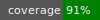
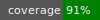

is-duration


 

A Ruby library for parsing and formatting duration strings with nanosecond precision. Provides a clean API for converting between numeric durations and human-readable string representations like "1h30m15s" or "2d12h".
Features
- Bidirectional conversion: Parse strings to seconds, format seconds to strings
- Nanosecond precision: Full support for milliseconds, microseconds, and nanoseconds
- Flexible formatting: Configurable units, delimiters, zero-padding, and negative value handling
- Type safety: Built on
is-enumfor robust option handling - Zero dependencies: Only requires
is-enumruntime dependency - Ruby 3.4+: Leverages modern Ruby features
Installation
Add to your Gemfile:
gem 'is-duration', '~> 0.8'
Or install directly:
gem install is-duration
Quick Start
require 'is-duration'
# Parse duration strings
IS::Duration.parse('1h30m') # => 5400
IS::Duration.parse('1d12h30m') # => 131400
IS::Duration.parse('500ms') # => 0.5
IS::Duration.parse('1s500ms') # => 1.5
# Format durations
IS::Duration.format(5400) # => "1h30m"
IS::Duration.format(90061) # => "1d1h1m1s"
IS::Duration.format(1.5) # => "1s500ms"
# With custom options
IS::Duration.format(1000, delim: ' ') # => "16m 40s"
IS::Duration.format(1, units: (:ms..:s), zeros: :fill) # => "01s000ms"
Supported Units
| Symbol | Name | Seconds Equivalent |
|---|---|---|
w |
weeks | 604,800 |
d |
days | 86,400 |
h |
hours | 3,600 |
m |
minutes | 60 |
s |
seconds | 1 |
ms |
milliseconds | 0.001 |
us |
microseconds | 0.000001 |
ns |
nanoseconds | 0.000000001 |
Parsing
The parse method accepts various input types:
# From strings
IS::Duration.parse('2h30m') # Integer: 9000
IS::Duration.parse('1.5') # Float: 1.5
IS::Duration.parse('500ms') # Float: 0.5
# From numbers (pass-through)
IS::Duration.parse(3600) # Integer: 3600
IS::Duration.parse(1.5) # Float: 1.5
IS::Duration.parse(1/2r) # Rational → Float: 0.5
# Nil handling
IS::Duration.parse(nil) # nil
# Invalid input raises ArgumentError
IS::Duration.parse('invalid') # raises ArgumentError
String format: One or more <number><unit> pairs separated by whitespace. Units must be in descending order of magnitude (e.g., 1h30m valid, 30m1h invalid).
Formatting
The format method converts numeric durations to strings with extensive customization:
Basic Usage
IS::Duration.format(3661) # => "1h1m1s" (default: seconds to days)
Options
| Option | Type | Default | Description |
|---|---|---|---|
units |
`Range<Unit\ | Symbol>` | (:s..:d) |
empty |
`OnEmpty\ | Symbol` | :skip |
zeros |
`OnZero\ | Symbol` | :single |
delim |
String |
"" |
Delimiter between components |
minus |
`OnMinus\ | String\ | Proc` |
Empty Value Handling (empty)
# :skip (default) — omit zero values
IS::Duration.format(3600, empty: :skip) # => "1h"
# :minor — skip leading (major) zero values, show trailing zeros
IS::Duration.format(3600, units: (:m..:h), empty: :minor) # => "1h0m"
# :force — always show all units in range
IS::Duration.format(3600, units: (:m..:h), empty: :force) # => "0m1h0m"
Zero Padding (zeros)
# :single (default) — no padding
IS::Duration.format(65, zeros: :single) # => "1m5s"
# :fill — zero-pad to unit width (2 for s/m/h, 3 for ms/us/ns)
IS::Duration.format(65, zeros: :fill) # => "01m05s"
IS::Duration.format(1, units: (:ms..:s), zeros: :fill) # => "01s000ms"
# :align — space-pad to unit width
IS::Duration.format(65, zeros: :align) # => " 1m 5s"
Delimiters
IS::Duration.format(3661, delim: ' ') # => "1h 1m 1s"
IS::Duration.format(3661, delim: ', ') # => "1h, 1m, 1s"
Negative Values (minus)
# :ignore (default) — format absolute value
IS::Duration.format(-3600, minus: :ignore) # => "1h"
# :error — raise ArgumentError
IS::Duration.format(-3600, minus: :error) # raises ArgumentError
# String prefix — prepend with delimiter
IS::Duration.format(-3600, minus: '-') # => "-1h"
IS::Duration.format(-3600, minus: 'minus', delim: ' ') # => "minus 1h"
# Proc — custom transformation
IS::Duration.format(-3600, minus: ->(s) { "(#{s})" }) # => "(1h)"
Unit Ranges
Control which units appear in output:
# Default: seconds to days
IS::Duration.format(90061) # => "1d1h1m1s"
# Extended: include weeks
IS::Duration.format(90061, units: (:s..:w)) # => "1w4d1h1m1s"
# Subsecond only
IS::Duration.format(0.001, units: (:ns..:ms)) # => "1ms"
IS::Duration.format(1, units: (:ns..:ns)) # => "1000000000ns"
# Mixed ranges
IS::Duration.format(3661.5, units: (:ms..:h)) # => "1h1m1s500ms"
Include Interface
For use within classes:
class MyClass
include IS::Duration
def process_duration(input)
seconds = parse_duration(input) # private method
format_duration(seconds, delim: ' ')
end
end
obj = MyClass.new
obj.process_duration('1h30m') # => "1h 30m"
Note: parse_duration and format_duration are private methods, intended for internal use within the including class.
Error Handling
All invalid inputs raise ArgumentError with descriptive messages:
IS::Duration.parse('abc') # ArgumentError: Invalid source value: "abc"
IS::Duration.parse('30m1h') # ArgumentError: Invalid source value: "30m1h" (wrong order)
IS::Duration.format(-1, minus: :error) # ArgumentError: Invalid source value: -1
IS::Duration.format('string') # ArgumentError: Invalid source value: "string"
Type Safety with Enums
The library uses IS::Enum for type-safe options:
# These are equivalent:
IS::Duration.format(100, empty: :skip)
IS::Duration.format(100, empty: IS::Duration::OnEmpty.skip)
# Available enums:
IS::Duration::Unit # ns, us, ms, s, m, h, d, w
IS::Duration::OnEmpty # force, minor, skip
IS::Duration::OnZero # fill, align, single
IS::Duration::OnMinus # ignore, error
Requirements
- Ruby >= 3.4
- is-enum ~> 0.8.8
License
LGPL-3.0-only. See LICENSE for details.
Contributing
Bug reports and pull requests welcome at https://github.com/inat-get/is-duration.